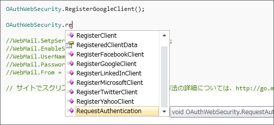
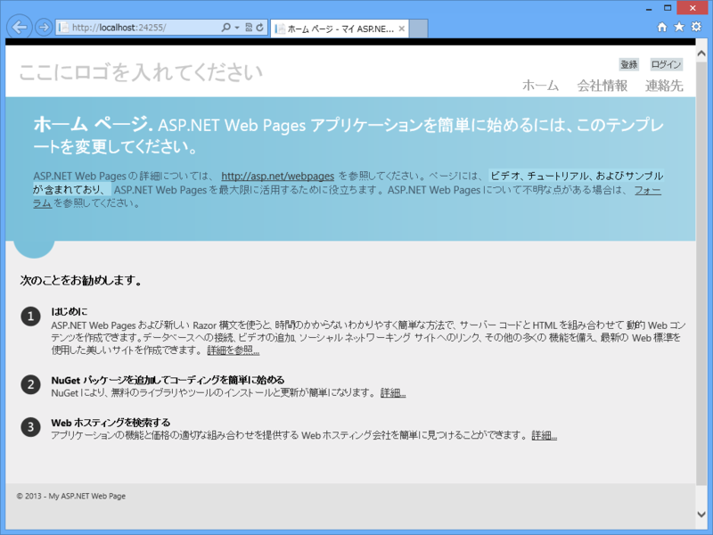
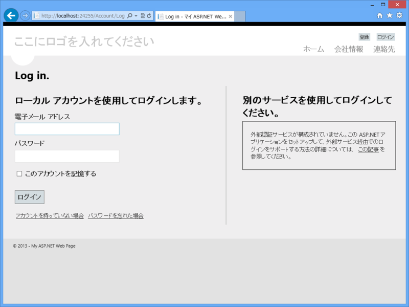
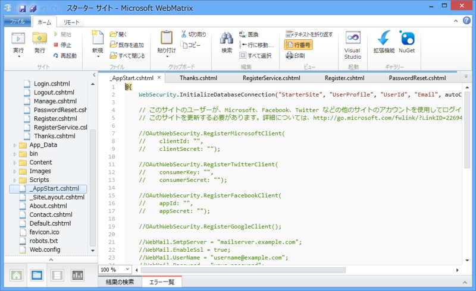
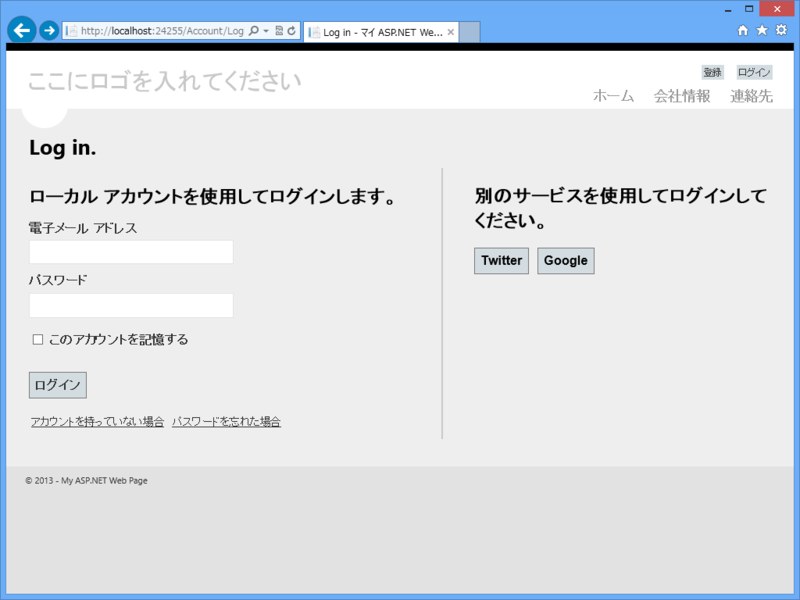
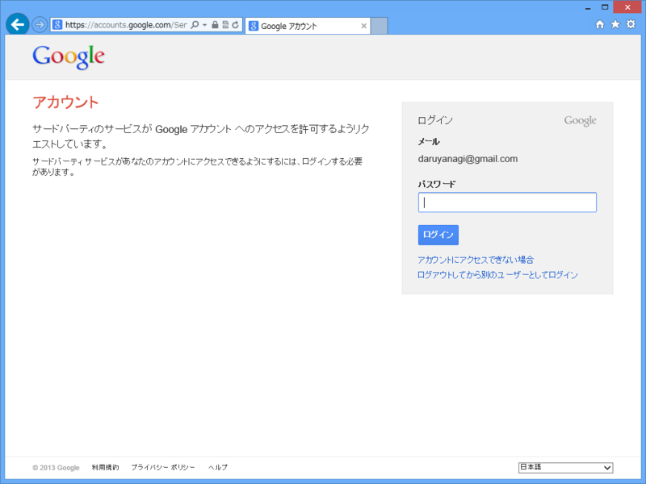
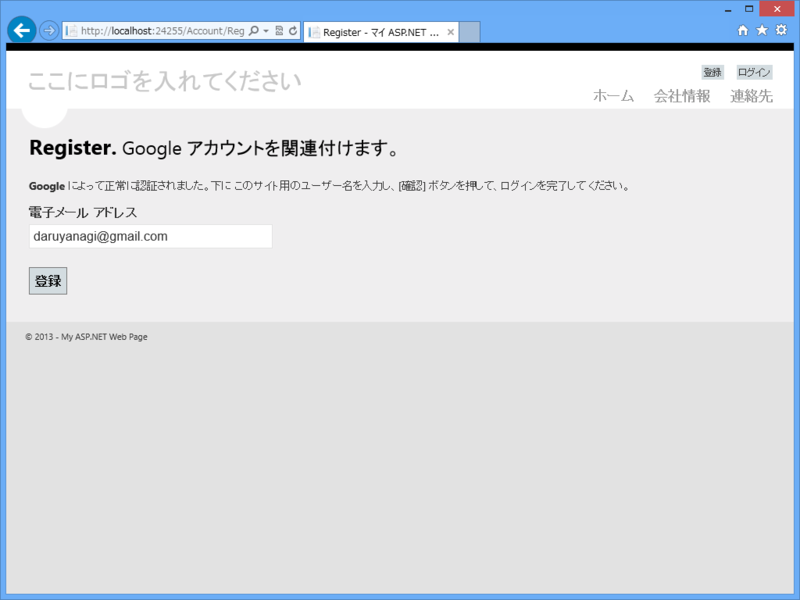
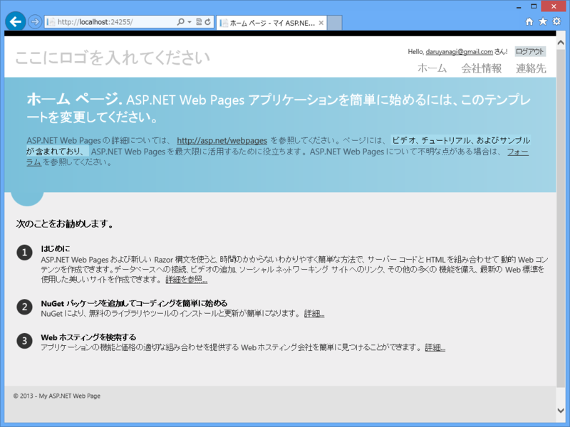
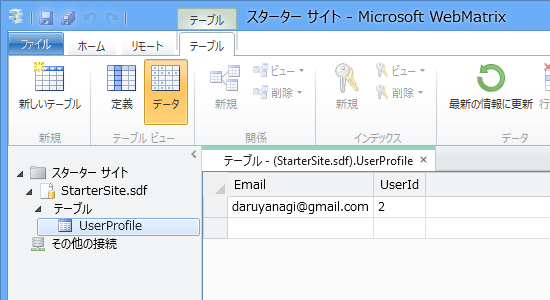

WebMatrix 2：OAuth でログインする
公開日：
「WebMatrix 2」と「ASP.NET Web Pages」を組み合わせれば、Web サイトへ OAuth 認証の機能を簡単に追加できる。標準で対応するプロバイダは以下の通り。

- Microsoft（旧 Windows Live）
- Yahoo
そのほかにも、カスタムプロバイダを自作して追加したりもできるみたいだけど、今回は、まぁ、いいや。
スターターテンプレート

で、問題はどうやって使うのか、だけど、「WebMatrix 2」の“スターター”テンプレートが格好の例となっているので、まずはこれを敵情視察したい。

さっそく、画面右上の［ログイン］を押すが……Twitter も Facebook も使えないじゃないか。

どうやら、“_AppStart.cshtml”*1でプロバイダを有効化する必要があるらしい（知ってた）。有効化したいプロバイダをコメントアウトしてリロードすれば、ちゃんと使えるようになる。

とりあえず Twitter の API キーを取得して試したのだけど、うまくいかない*2。今回は原因を突き止めるのも面倒なので、API キーの要らない Google で試してみたが……

いともあっさり動いた（右上に注目！）。

データベースにもちゃんと登録されている*3。Google に認証を委譲したので、こちら側にはパスワードが保存されていない。
さて、“スターター”テンプレートから不要なものを削り、必要なものを足してアプリを作ってもいいのだけど、それも面倒そうだし、一から勉強する意味でも、次回は“空のサイト”テンプレートで Google 認証によるログインまでを実装しようかな、と思う*4。